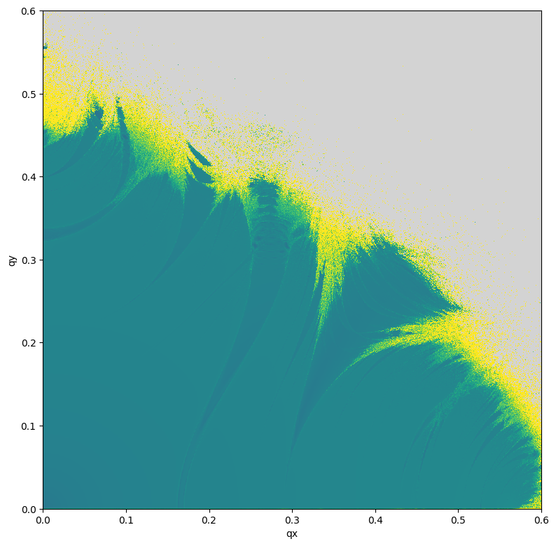

Example-05: Frequency (Jacobian)
[1]:
# In this example frequency derivative is used as choas indicator
# Frequency estimation based on window weighted average phase advance is a differentiable function
# Hence, it is possible to compute derivaties of it with respect to initial conditions or paraters
# In the case of derivatives with respect to initial condition (frequency vector Jacobin)
# One would expect frequency to be continuous if space for regular initials
# Normally, the norm of Jacobian is expected to be relatively small for regular initials
# For choatic initials this norm is observed to be much large
# Thus, Jacobian norm can be used as a chaos indicator
# Note, in Frequency Map Analysis (FMA) frequency time invariance is used as the idea for chaos detection
# Here, space continuity is used in a similar way
[2]:
# Import
import numpy
from tqdm import tqdm
import jax
from jax import jit
from jax import vmap
from jax import jacrev
from jax import jacfwd
# Test symplectic mapping and corresponding inverse
from tohubohu.util import forward4D
# Frequency factory
from tohubohu import exponential
from tohubohu import frequency
# Plotting
from matplotlib import pyplot as plt
from matplotlib import colormaps
cmap = colormaps.get_cmap('viridis')
cmap.set_bad(color='lightgray')
[3]:
# Set data type
jax.config.update("jax_enable_x64", True)
[4]:
# Set device
device, *_ = jax.devices('cpu')
jax.config.update('jax_default_device', device)
[5]:
# Set mapping parameters
nux, nuy = 0.168, 0.201
mux, muy = 2*jax.numpy.pi*nux, 2*jax.numpy.pi*nuy
cx, sx, cy, sy = jax.numpy.cos(mux), jax.numpy.sin(mux), jax.numpy.cos(muy), jax.numpy.sin(muy)
mu = 0.0
[6]:
k = jax.numpy.asarray([cx, sx, cy, sy, mu])
x = jax.numpy.array([0.0, 0.0, 0.0, 0.0])
[7]:
# Set frequency function
ws = exponential(2**12)
fn = jit(frequency(ws, forward4D))
out = fn(x, k)
[8]:
# Set frequency based indicator
@jit
def gn(x, k):
return jax.numpy.log10(1.0E-16 + jax.numpy.linalg.norm(jacrev(fn)(x, k)))
out = gn(x, k)
[9]:
# Set initial grid in (qx, qy) plane
n = 1001
qx = jax.numpy.linspace(0.0, 0.6, n)
qy = jax.numpy.linspace(0.0, 0.6, n)
qs = jax.numpy.stack(jax.numpy.meshgrid(qx, qy, indexing='ij')).swapaxes(-1, 0).reshape(n*n, -1)
ps = jax.numpy.full_like(qs, 1.0E-12)
xs = jax.numpy.hstack([qs, ps])
xs = jax.numpy.array_split(xs, n)
[10]:
# Evaluate indicator
xb, *xr = xs
fj = jit(vmap(gn, (0, None)))
out = [fj(xb, k)]
for xb in tqdm(xr):
out.append(fj(xb, k))
out = jax.numpy.concatenate(out)
# Winsorize data
data = numpy.array(out)
data[data < -16.0] = -16.0
data[data > 16.0] = 16.0
data = data.reshape(n, n)
# Plot
plt.figure(figsize=(8, 8))
plt.imshow(data, aspect='equal', vmin=-16.0, vmax=16.0, origin='lower', cmap=cmap, interpolation='nearest', extent=(0., 0.6, 0., 0.6))
plt.xlabel('qx')
plt.ylabel('qy')
plt.tight_layout()
plt.show()
100%|█████████████████████████████████████████████████████████████████████████████████████████| 1000/1000 [15:52<00:00, 1.05it/s]

[ ]:
[ ]: